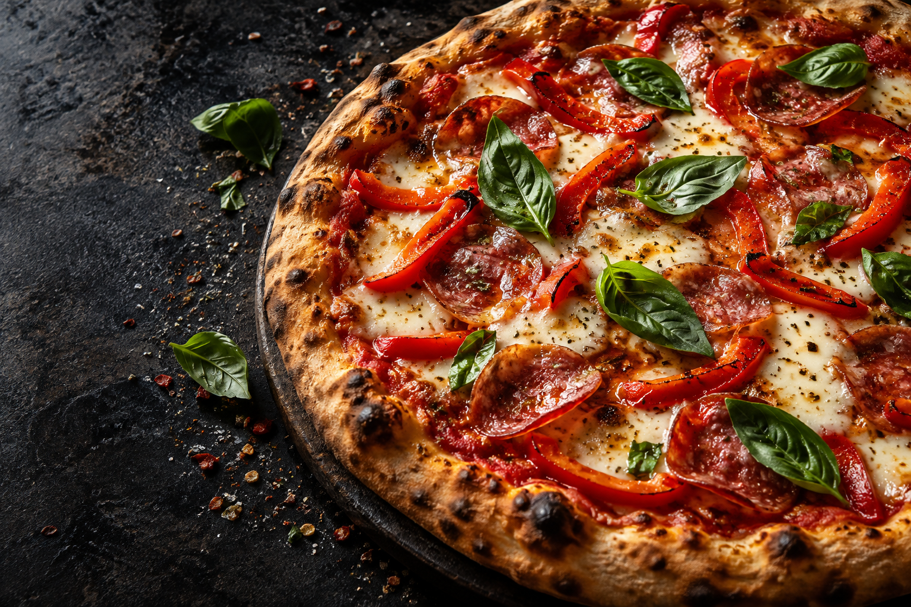
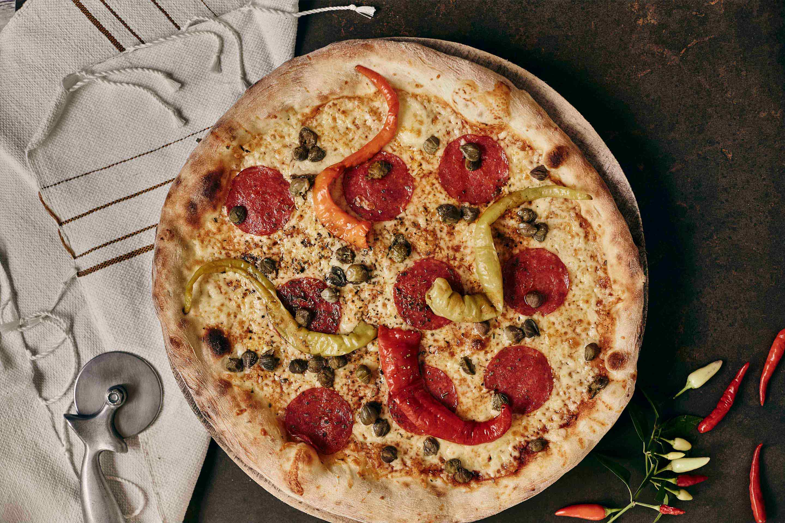

WARSZAWAŻOLIBORZ
Potocka 1
Znajdziesz nas na 1. piętrze pływalni.
Poniedziałek–czwartek12:00–21:00Piątek–niedziela12:00–22:00
22 832 50 50Zamówienia w tej Parmie przyjmujemy telefonicznie.

✳ ŻOLIBORZ & ŁOMIANKI
Własne ciasto. Rodzinne receptury.
Dobry powód, żeby usiąść razem.
Zdjęcie ilustracyjne
NASZA HISTORIA
Rodzinna pizzeria, własna receptura. Nasze początki sięgają 1993 roku, a pod nazwą Parma pieczemy od 1995.
Ciasto i sos przygotowujemy według własnych receptur. Nasz styl? Pomiędzy cienką włoską pizzą a puszystym amerykańskim ciastem. Po prostu po naszemu.

ZNAJDŹ SWOJĄ PARMĘ
Wpadnij na miejscu albo zadzwoń.
My zajmiemy się resztą.
Znajdziesz nas na 1. piętrze pływalni.
Zamówienia w tej Parmie przyjmujemy telefonicznie.
Twoja Parma przy Warszawskiej.
Zamówienia w tej Parmie przyjmujemy telefonicznie.
Zamówienia przyjmujemy do 30 minut przed zamknięciem. Według strony pizzerii: dostawa 7 zł, zamówienie od 35 zł. Płatność kartą zgłoś przy zamówieniu telefonicznym.
WIECZÓR MA JUŻ PLAN.